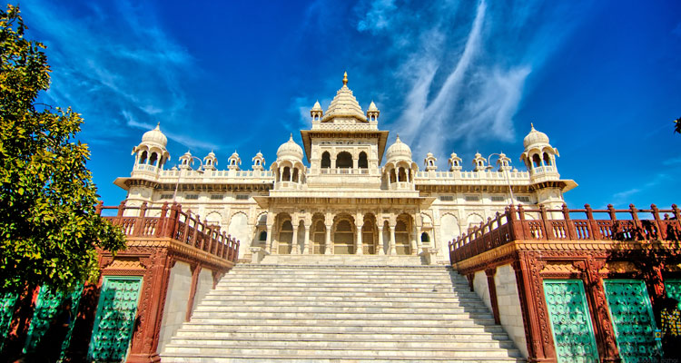
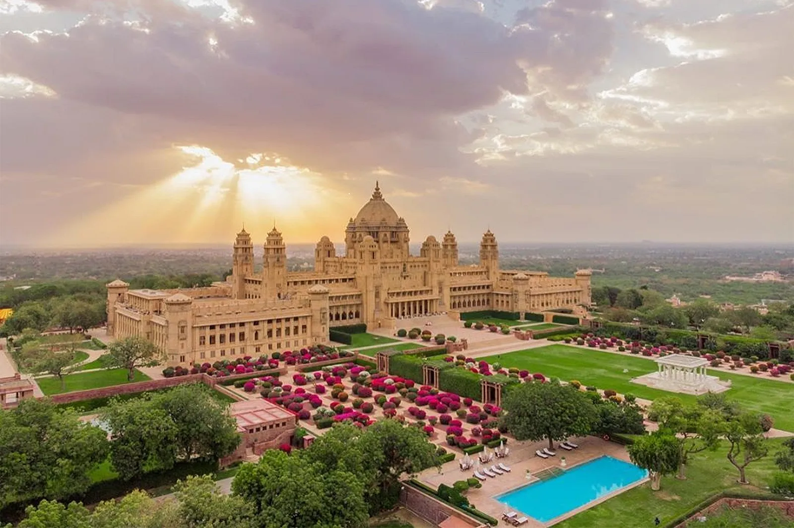

Amber Fort
A majestic fort with intricate architecture and panoramic views, Amber Fort is a must-visit in Jaipur.
READ MORE »
Hawa Mahal
Known as the "Palace of Winds," this five-story structure is one of Jaipur’s most iconic landmarks.
READ MORE »
City Palace
A blend of Mughal and Rajput architecture, the City Palace showcases royal grandeur and heritage museums.
READ MORE »
Mehrangarh Fort
One of India’s largest forts, Mehrangarh offers breathtaking views of the Blue City of Jodhpur.
READ MORE »

Jaswant Thada
This beautiful marble cenotaph is often called the "Taj Mahal of Marwar," built in memory of Maharaja Jaswant Singh II.
READ MORE »

Umaid Bhawan Palace
One of the world’s largest private residences, Umaid Bhawan Palace is a symbol of luxury and heritage.
READ MORE »